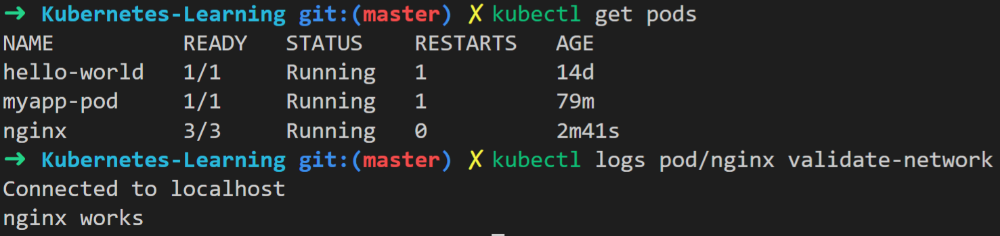
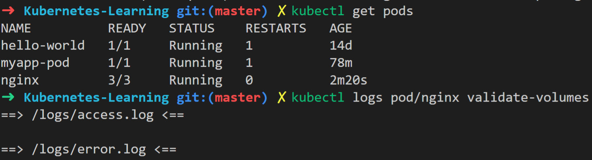

Pod 是啥？ Pod是豆荚，这是一个很形象的名字。在一个豆荚中，通常都会有一个或者多个豆子，这些豆子就像是Pod中运行着的容器。
Pod 是什么？
Pod 是Kubernetes基本的执行单元，是我们可以创建、部署的最小最简单的单元。
Pod 中有什么？
- 一个或者多个应用程序容器。
- 存储资源。
- 网络资源。
- 应用程序容器的运行策略配置。
Manifest Example
这是一个很简单的Pod的manifest，在Pod中运行了nginx的容器。
1 | apiVersion: v1 |
Pod中容器之间的关系
下面这个Pod的manifest中包含了3个容器。可以使用kubectl apply的方式将该Pod部署到Kubernetes上。
1 | apiVersion: v1 |
1. 共享网络IP地址和端口
容器之间可以使用localhost通信。在一个Pod中多个容器不能使用同一个端口。
在上面的例子中，nginx容器启动之后会默认占用80端口。在validate-network容器中执行了telnet localhost 80，结果如下。

2. 共享存储资源
Pod可以指定一组共享存储卷。 Pod中的所有容器都可以访问共享卷，从而使这些容器可以共享数据。
在上面的例子中，nginx和validate-volumes容器共同使用了logs这个共享存储卷。nginx容器会将日志输出到该存储卷中，validate-volumes容器会把nginx的日志读取出来。

3. 紧耦合的
如何使用Pod？
Pod被设计为相对短暂的（非持久的）一次性的实体。 因此不推荐在Kubernetes中直接创建Pod。比如，一个Pod被创建之后，由于资源不足被驱逐或者运行这个Pod的节点挂了，Pod是无法自我恢复的。
在Kubernetes中有一个更高层次的抽象来负责管理Pod，Controller。比如Deployment、ReplicaSets，DaemonSet。在这些Controller中，会使用Pod模板管理Pod，下面是一个ReplicaSets的例子。
1 | apiVersion: apps/v1 |